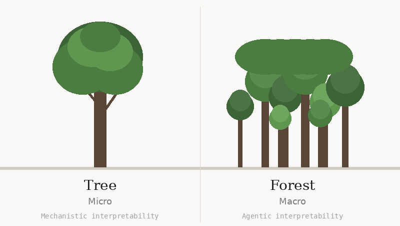
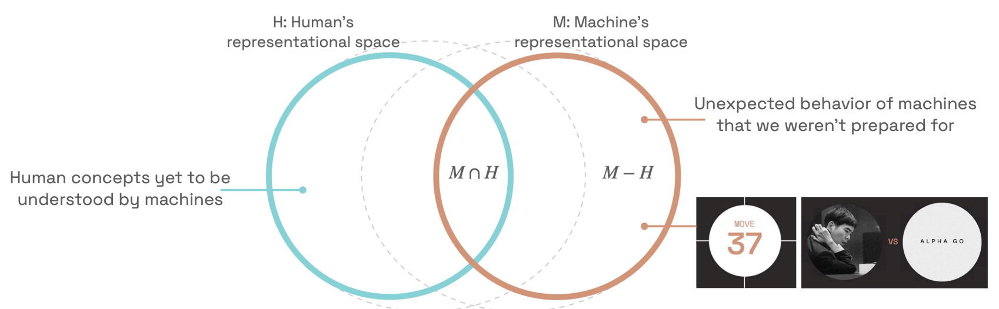
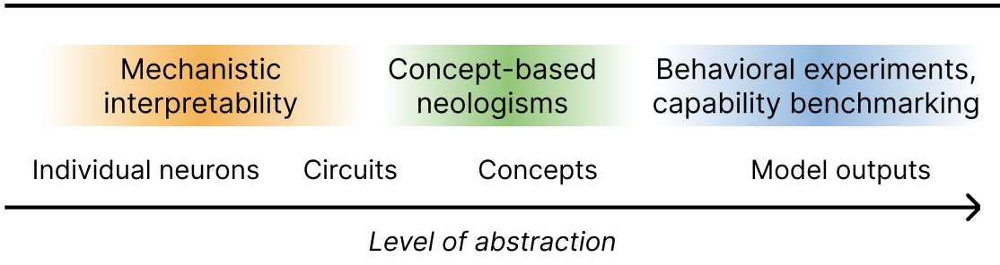
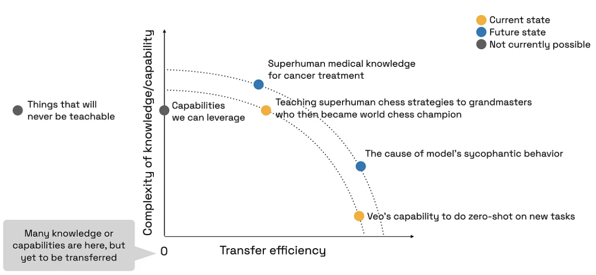

Complete understanding of large models — defined as mathematical proof of what the system will do — is likely out of reach. Models have too many parameters for humans to digest, there are too many models changing daily, and agents composed of many models make decisions together over extended periods. Each layer compounds the impossibility.
This motivates two streams. Micro (mechanistic) interpretability aims to understand specific things exhaustively: the tree. Macro (agentic) interpretability aims to understand well enough to do something useful: the forest. A method pursues agentic interpretability if it proactively assists human understanding in a multi-turn interactive process by developing a mental model of the user, enabling humans to build better mental models of the LLM.
The human and machine language circles do not fully overlap. The same word can mean something subtly different to each. If macro interpretability is going to work, humans need to grow their circle outward — aided by neologisms (new learnable concepts) that enable useful abstractions, compositionality, and a language-level interface for control. Kim's chess study showed grandmasters could absorb superhuman concepts by bypassing language entirely, but most domains cannot do this.
Kim proposed a Pareto frontier framing for measuring interpretability progress: transfer efficiency (inverse human cost) on the x-axis, task complexity on the y-axis. Progress should mean pushing this frontier for everyone, not just experts.

Micro interpretability targets well-defined, high-stakes behaviors — the tree. Macro interpretability targets less well-defined, beyond-human behaviors for daily use — the forest.
Dr. Kim draws a line between micro interpretability (understanding specific things exhaustively) and macro interpretability (understanding well enough to act). This is a useful distinction, but it raises a question: who decides what counts as "well enough"? Does the threshold change depending on the stakes, the user, or the domain — and if so, is macro interpretability one thing or many?

A key reason the chess study worked is that grandmasters did not need verbal explanations — they saw the board and connected the dots. Kim explicitly noted "we kind of bypassed the language part." In most other domains — science, law, policy — you cannot bypass language. The explanation is the thing. Does this reintroduce all the problems of semantic misalignment that chess conveniently avoided?

The machine-to-human direction relies on interpretability and self-verbalization, with plug-in evaluations to check transfer. Both Kim and Steinhardt use the term "agentic interpretability," but their emphases differ: Kim centers on teaching — expanding what humans understand through interactive dialogue. Steinhardt centers on oversight — building specialized AI that surfaces failure modes humans would miss. Are these complementary halves of the same project, or fundamentally different goals?

What are the right axes for measuring "interpretability progress" for (a) experts vs. (b) lay users?
Schut, L. et al. (2025). Bridging the human-AI knowledge gap through concept discovery and transfer in AlphaZero. PNAS 122(13). Link
Hewitt, J., Tafjord, O., Geirhos, R. & Kim, B. (2025). Neologism learning for controllability and self-verbalization. Link
Kim, B. et al. (2025). Because we have LLMs, we can and should pursue agentic interpretability. Link
Hewitt, J., Geirhos, R. & Kim, B. (2025). We can't understand AI using our existing vocabulary. ICML 2025 Position Paper. Link
Kim, B. (2025). The Pareto frontier of human-centered AI. Link
Adebayo, J. et al. (2018). Sanity checks for saliency maps. NeurIPS 2018. Link